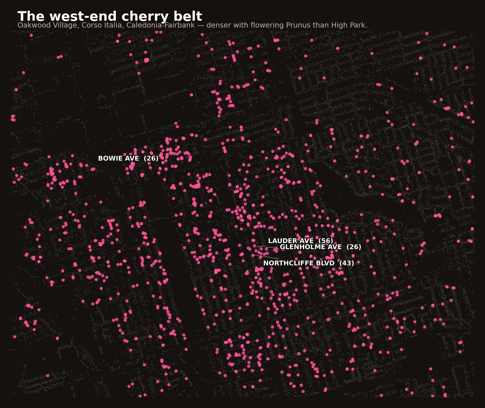
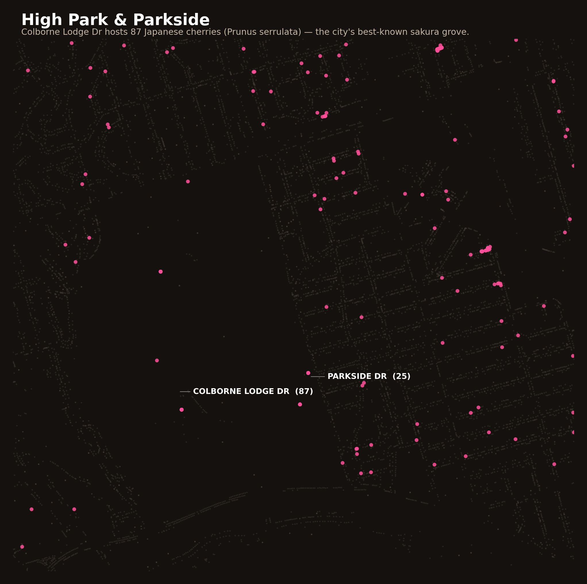

April 2026 · a spring-pilgrimage guide from the street-tree data

Every April, Torontonians post the same photo. A knot of people under a Japanese cherry at High Park. The pink blossoms. The festival. The traffic.
I was curious how well the cherry-blossom story survives contact with the actual inventory of trees the city maintains. Turns out: not very. High Park-Swansea has 193 flowering Prunus trees (cherries, plums, peaches, apricots) on city road allowances. The neighbourhood of Oakwood Village, four kilometres northeast, has 339. And the contiguous cluster of west-end neighbourhoods around Oakwood — what we might as well call the west-end cherry belt — has 1,783 cherry trees. That's 9× more than High Park.
If you're willing to skip the crowds and walk instead of subway, this is where you want to be.

This is a largely residential area, historically Italian- and Portuguese-Canadian, with the kind of narrow front yards where a flowering fruit tree makes sense. Many of the boulevard trees were likely planted at residents' request; the city's Request-a-Street-Tree program has been around for decades. Whatever the exact origin story, the result is streets like these:
| Street | Neighbourhood | Cherry trees |
|---|---|---|
| Colborne Lodge Dr | High Park-Swansea | 87 |
| Queen St W | Trinity-Bellwoods | 59 |
| Lauder Ave | Oakwood Village | 50 |
| Northcliffe Blvd | Oakwood Village | 38 |
| Symington Ave | Junction-Wallace Emerson | 33 |
| Bowie Ave | Briar Hill-Belgravia | 26 |
| Parkside Dr | High Park-Swansea | 25 |
| Glenholme Ave | Oakwood Village | 24 |
| Beechborough Ave | Beechborough-Greenbrook | 23 |
| Caledonia Rd | Caledonia-Fairbank | 22 |
If you were designing a cherry-blossom walking tour that wasn't at High Park, it would start at Lauder Ave between St Clair and Rogers — 50 trees in a one-kilometre stretch — and wander north through Northcliffe, Winona, Glenholme, and Alameda. A whole afternoon of pink, without a single selfie stick.

High Park's cherry grove is famous because it's a grove: the trees are concentrated within a park, with open sightlines, blooming together against a single backdrop. It's an iconic Toronto place, and the story of the original 1959 gift from the Japanese ambassador is a good one.
But the raw count of flowering cherry trees the city maintains tells a different story: the biggest concentrations are in neighbourhoods, on residential streets, where people tend their own front-yard trees. You won't get the grove effect. You'll get something more like a long slow drift through pink canopy.
(And a reminder: this dataset is street trees on city road allowances. It does not include trees inside High Park itself — parks have separate inventories — or trees in front yards on private property. So the park's actual tree count is higher than 87; it's just that only 87 are on road-allowance land the city catalogues in this dataset.)
"Cherry blossom season" in Toronto isn't one weekend. It's about six weeks of different species taking turns:
So the Japanese cherries everyone knows (the ones with heavy pink clouds in High Park and on Lauder) open in late April and are usually gone within a week. But if you want to extend blossom season, there's an earlier tier (apricots, Sargent) and a later one (Kwanzan, chokecherry). The Sargent cherries are especially lovely and under-noticed, with flat-topped shape and soft pink flowers that open before the leaves. Toronto has 34 of them — small enough to be a treasure hunt, too few to cluster in any one neighbourhood.
🌸 Don't want to miss next spring? Subscribe to the cherry-blossoms iCal feed and your phone will remind you a few days before each cohort opens, every year.
This analysis is from the street-tree dataset, which covers city-owned trees on road allowances — the strip between the sidewalk and the curb. It misses:
But differences at the neighbourhood level between road-allowance counts are meaningful. Oakwood Village has more front-yard boulevard cherries than High Park-Swansea, full stop. If your Saturday morning plan is "walk somewhere and see blossoms," the data nominates a different answer than the Instagram consensus.
Want to know what's flowering in front of your house?
Search any Toronto address and see every street tree on your block — species, photo, bloom time, fall colour.
Look up an address →